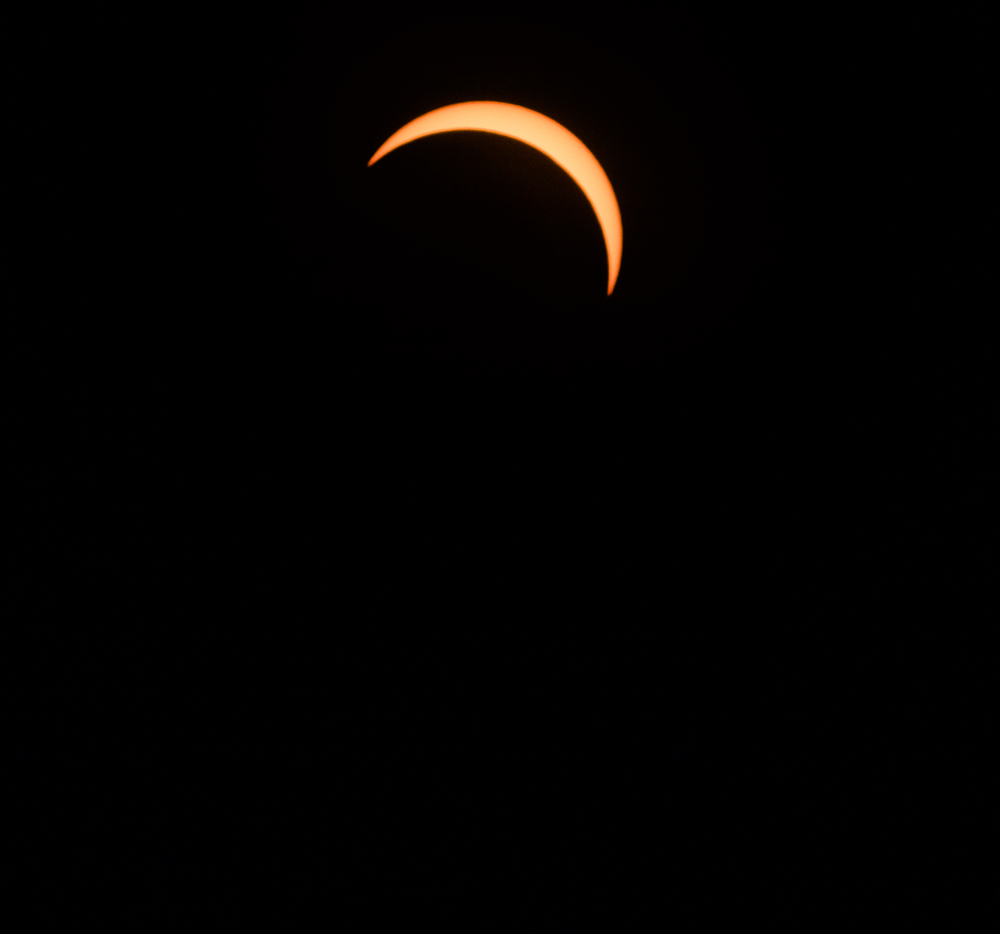
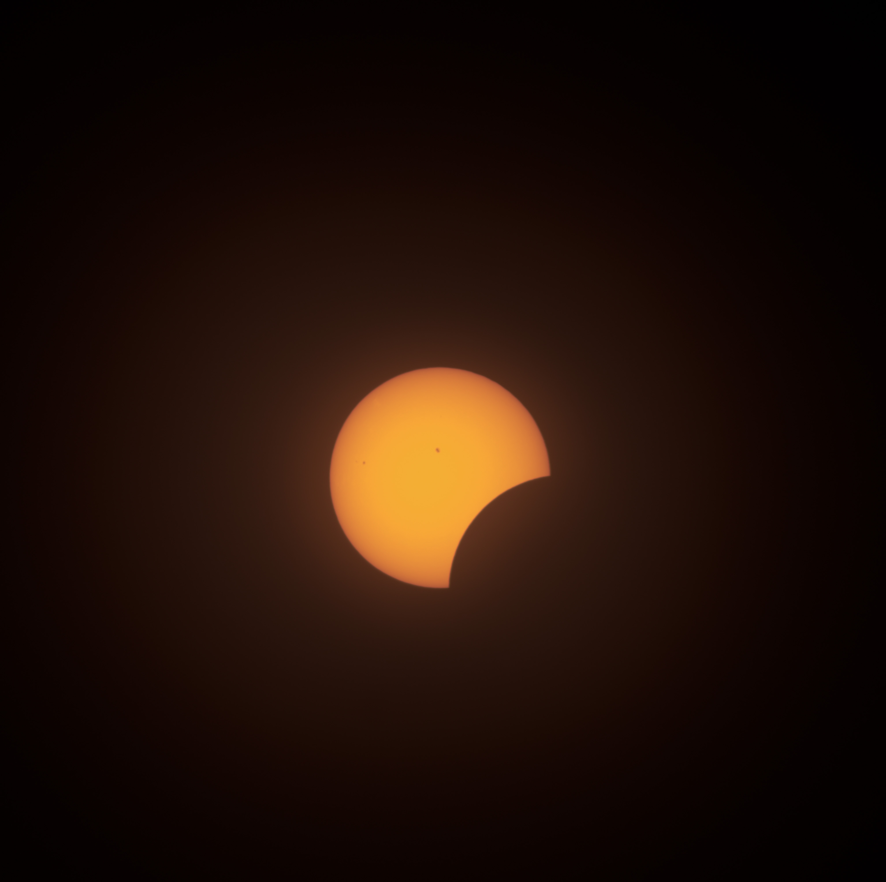

Solar Eclipse Maximum 2024
My first time capturing a Solar Eclipse.
Sun Spots!
Cooled areas on the surface of the sun.
Comet A3

Flyby of Comet A3 in October, 2024.
Lunar Eclipse 2025

First time shooting a Lunar Eclipse.